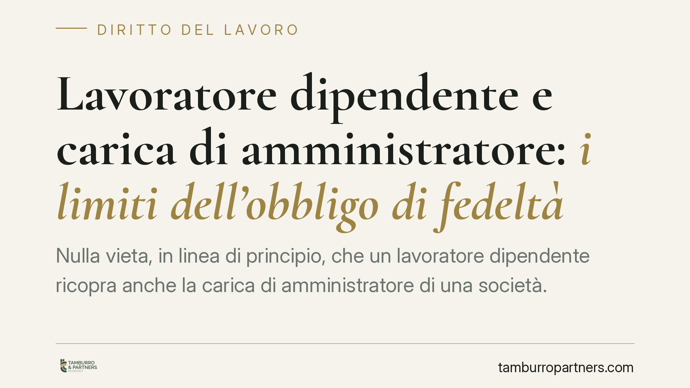

Lavoratore dipendente e carica di amministratore: i limiti dell'obbligo di fedeltà
Nulla vieta, in linea di principio, che un lavoratore dipendente ricopra anche la carica di amministratore di una società. Il problema sorge quando questa doppia veste genera un conflitto di interessi con il datore di lavoro. La giurisprudenza di legittimità conferma che, in tali casi, il licenziamento può essere legittimo, con un rigore particolare per i dirigenti.

Il punto di partenza: nessun divieto generale
Il lavoratore subordinato non è giuridicamente impedito dall'assumere cariche sociali in una società, inclusa quella di amministratore. Non esiste, nel nostro ordinamento, una norma che sancisca un'incompatibilità assoluta tra la posizione di dipendente e quella di amministratore.
La questione, tuttavia, non si esaurisce qui. Il limite non è formale ma sostanziale: dipende da *che cosa* fa concretamente il lavoratore nella sua veste di amministratore e da *come* questa attività si rapporta agli interessi del datore di lavoro.
Inquadramento normativo: l'obbligo di fedeltà
Il perno dell'analisi è l'art. 2105 del codice civile, che impone al prestatore di lavoro due doveri distinti: non trattare affari in concorrenza con il datore (divieto di concorrenza) e non divulgare né utilizzare notizie attinenti all'organizzazione e ai metodi di produzione dell'impresa in modo pregiudizievole (dovere di riservatezza).
Questo obbligo va letto insieme ai principi generali di correttezza e buona fede nell'esecuzione del contratto, sanciti dagli artt. 1175 e 1375 cod. civ.. La Cassazione Civile, Sezione Lavoro, ha più volte precisato che l'obbligo di fedeltà ha una portata più ampia del semplice divieto di concorrenza: comprende ogni condotta che, per la sua natura e le sue conseguenze, appaia idonea a ledere gli interessi del datore o a minare il rapporto fiduciario.
In questa cornice, assumere la carica di amministratore in una società che opera nello stesso mercato del datore, o che intrattiene con esso rapporti commerciali, può integrare una violazione dell'art. 2105 c.c., anche in assenza di un atto di concorrenza già consumato. È sufficiente la condotta preparatoria o la situazione di potenziale conflitto.
Implicazioni pratiche: quando scatta il rischio
Il discrimine è il conflitto di interessi. Diventa amministratore di una società concorrente, o che fornisce o acquista dalla propria azienda datrice, significa collocarsi in una posizione in cui gli interessi che si è chiamati a perseguire come amministratore possono divergere da quelli che si è tenuti a tutelare come dipendente.
La valutazione è sempre concreta. Rilevano:
- l'oggetto sociale della società amministrata e la sua sovrapposizione con l'attività del datore;
- l'esistenza di rapporti commerciali diretti tra le due realtà;
- le mansioni del lavoratore e il suo grado di accesso a informazioni sensibili;
- l'eventuale utilizzo di know-how, contatti o dati acquisiti grazie al rapporto di lavoro.
Un aspetto centrale riguarda i dirigenti. Per questa categoria la giurisprudenza applica un criterio di valutazione più severo. Il rapporto fiduciario che lega il dirigente al datore è particolarmente intenso, data l'ampiezza dei poteri e la posizione apicale. Di conseguenza, condotte che per un impiegato potrebbero non raggiungere la soglia della giusta causa possono invece giustificare il recesso nei confronti del dirigente, dove il licenziamento resta valido anche in presenza di una "giustificatezza" meno rigorosa della giusta causa in senso tecnico.
Le conseguenze del conflitto
La violazione dell'obbligo di fedeltà può condurre a sanzioni disciplinari fino al licenziamento per giusta causa, qualora la condotta sia di gravità tale da non consentire la prosecuzione, nemmeno provvisoria, del rapporto. Non è necessario che il datore dimostri un danno effettivo: può bastare l'idoneità della condotta a pregiudicare gli interessi aziendali e a incrinare la fiducia.
Resta fermo che ogni contestazione deve rispettare le garanzie procedurali previste dall'art. 7 dello Statuto dei lavoratori e che la valutazione di proporzionalità spetta al giudice.
Cosa fare in concreto
- Verificate preventivamente l'oggetto sociale della società in cui si intende assumere la carica e confrontatelo con l'attività del datore di lavoro.
- Richiedete un'autorizzazione scritta al datore prima di accettare l'incarico: la trasparenza riduce in modo significativo il rischio di contestazioni per violazione della fedeltà.
- Controllate il contratto individuale e il CCNL applicabile, che possono contenere clausole di esclusiva o divieti espressi di assumere cariche sociali.
- Evitate ogni sovrapposizione tra l'uso di informazioni, contatti o risorse acquisite in azienda e l'attività svolta come amministratore.
- Se siete dirigenti, valutate l'incarico con particolare cautela: la soglia di tollerabilità del conflitto è, per voi, nettamente più bassa.
Consigliamo in ogni caso una verifica caso per caso, poiché la legittimità della doppia veste dipende da circostanze concrete che vanno esaminate singolarmente.
---
*Contributo informativo a cura di Tamburro & Partners - Avv. Giuseppe Tamburro. Non costituisce parere legale.*
Ogni storia di lavoro ha i suoi tempi.
Se gestisci HR e vuoi un confronto su contenzioso, ispezioni o licenziamenti, scrivi allo studio. Ti rispondiamo entro un giorno lavorativo.